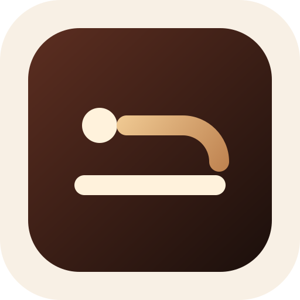
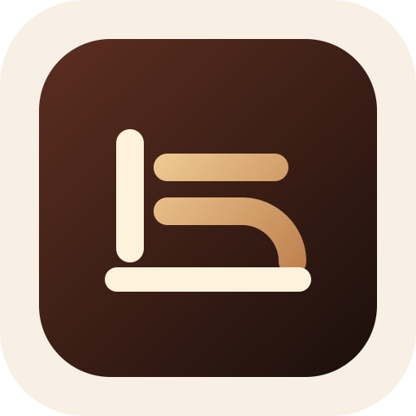
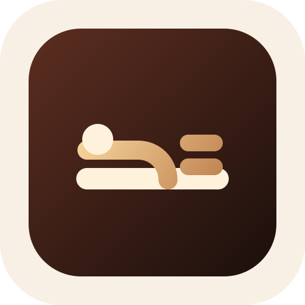
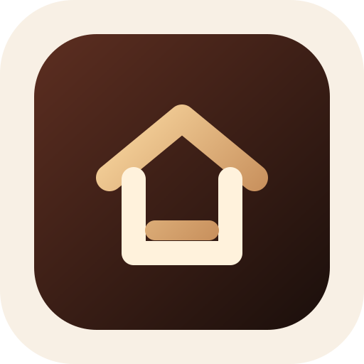
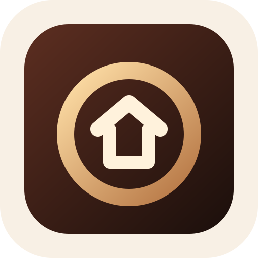
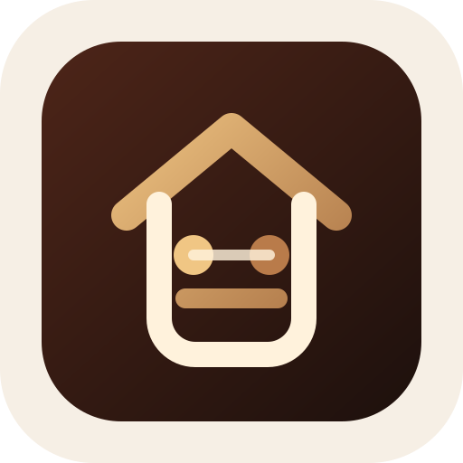
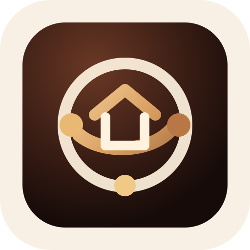
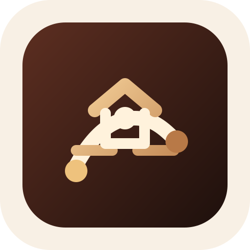

抽象 A：躺线 头部、身体弧线和资产底线，最贴近“躺”的姿态但不写字。能躺了吗 App 图标候选
统一使用高级棕色、铜金和暖米色。最新版本从“躺”的横向安定感中提炼符号，不直接使用汉字。

抽象 B：躺字笔画 从“躺”的竖、横、弯钩里提炼，保留字感但更像图形。
抽象 D：资产床 床/资产线结合，表达“躺得下”的财务基础。
简化 A：家庭资产屋 只保留屋形和一条资产线，最直接、最像正式 App 图标。
简化 B：资产圆章 圆形代表资产盘和安全垫，内部是家庭，识别度更强。
方案 A：家庭资产屋 房屋代表家庭，硬币和横线代表可规划资产。最直观、最适合备案和应用商店。
方案 C：资产轨道 环形代表长期规划周期，家庭和资产点围绕核心目标运行。
方案 D：规划地图 路径、节点和家庭资产结合，强调从现在走向长期目标。